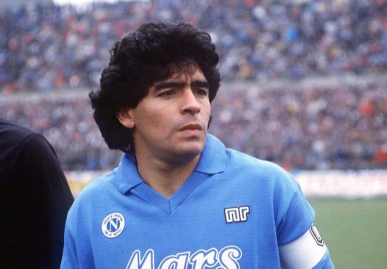

Maradona
The man with hand of GOD

Maradona at his youger age
Timeline of Maradona
- 1960 : He was born in Buenos Aires
- 1976 : he devuted in Argentinos Jr.
- 1981 : he started playing with Boca Jr.
- 1982 : transfered to Barcelona
- 1984 : he moved to Napoli
- 1986 : he won the world cup
- 1990 : he got to the world cup's finals
- 2000 : he won the Fifa's player of the century
- 2010 : he couched the national team of Argentina
"When people succeed, it is because of hard work. Luck has nothing to do with success." -- Diego MaradonaIf you want to read more about Maradona, go here